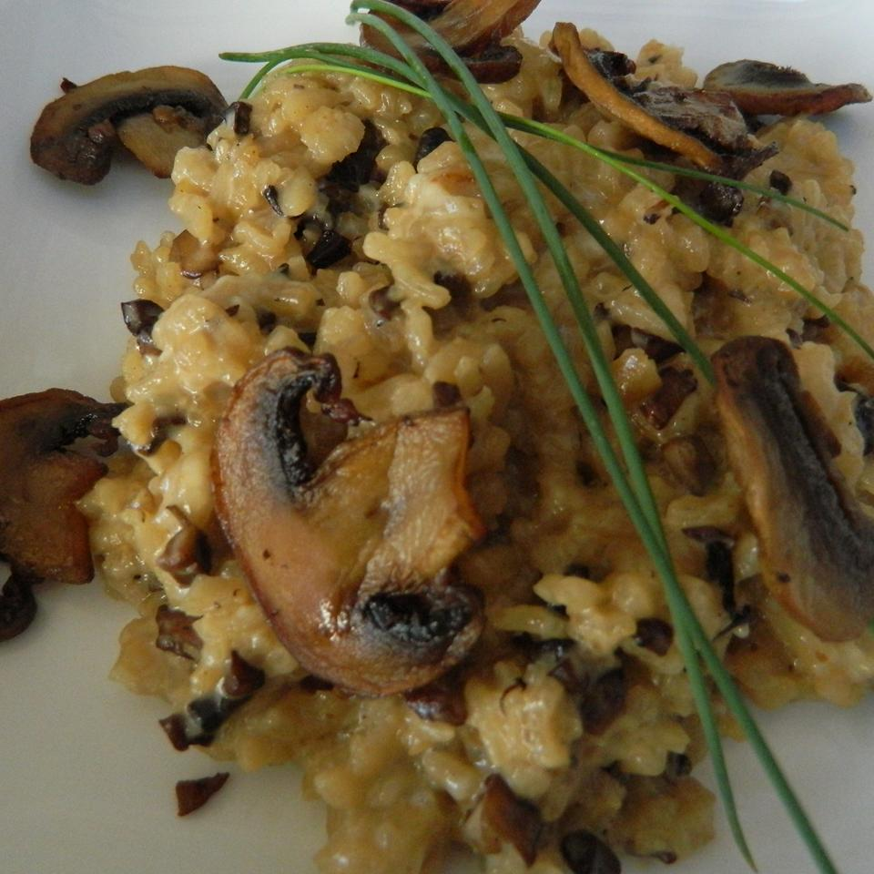

Chef John's Baked Mushroom Risotto

Description
The beginning and the end of this risotto recipe are pretty standard, but we've moved the middle 15 minutes into the oven in an attempt to eliminate those dreaded 'variables.' Besides being easier and more repeatable, this method produced a risotto that was identical in looks, taste, and texture to anything I can do on the stove.
Ingredients
- 3 tablespoons butter
- 3 cups diced mushrooms
- ½ yellow onion, diced
- 1 pinch cayenne pepper
- 1 cup carnaroli rice
- 2 cups chicken broth, divided
- ½ cup heavy whipping cream
- ½ cup chicken broth
- 2 tablespoons heavy whipping cream
- ½ cup finely grated Parmigiano-Reggiano cheese
- 2 tablespoons chopped fresh chives
Directions
- Preheat oven to 400 degrees F (200 degrees C).
- Melt butter in large, oven-proof skillet over medium-high heat. Add mushrooms; season with salt, and cook and stir mushrooms until brown. They will begin browning after the moisture evaporates.
- Reduce heat to medium and stir in onion. Sprinkle with black pepper and cayenne pepper. Cook and stir until onions are translucent and soft.
- Pour rice into skillet and stir until each rice grain is coated with butter. Season with salt.
- Pour 1 cup chicken broth into the rice mixture. Raise heat to medium-high and cook, stirring rice until liquid is completely absorbed by the rice.
- Pour another cup chicken stock into the rice and stir until mixture comes to a simmer.
- Bake in preheated oven until grains are almost tender but still slightly firm, about 15 minutes. Transfer skillet to stovetop. Season with more salt, if necessary.
- Combine the remaining 1/2 cup chicken broth and cream; pour into the skillet. Cook on medium heat, stirring constantly until rice is tender, 1 or 2 minutes. Remove skillet from heat.
- Drizzle 2 tablespoons cream over rice. Add the grated Parmigiano-Reggiano and chives; stir. Serve immediately.